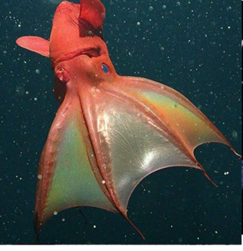

СЕМЕЙСТВА Vampyroteuthidae
ГЛУБИНА:от 400 до 1000 метров
КОГДА ОТКРЫЛИ: был обнаружен во время экспедиции Вальдивии (1898–1899).
ТИП ПИТАНИЯ:детритофаг. Вместо живой добычи он собирает взвешенные в воде частицы детрита
Принимает «тыквенную» или «ананасов» позу. Вытягивает руки наружу и оборачивает их вокруг своего тела, выворачиваясь наизнанку, и обнажает колючие выступы на щупальцах.
Выбрасывает облако биолюминесцентной слизи. Этот световой шквал может длиться почти 10 минут и, предположительно, служит для ослепления потенциальных хищников.
Совершает хаотичные движения. Это затрудняет хищнику идентификацию самого кальмара среди множества неожиданных целей.
Использует втягивающие нити. Есть предположение, что они играют большую роль в избегании хищника как с помощью механизмов обнаружения, так и бегства

наверх